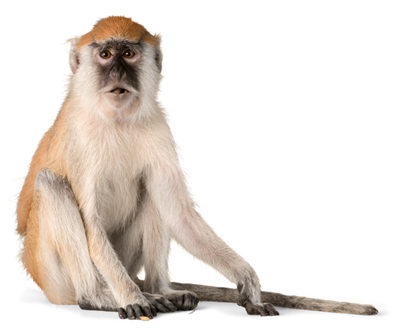

Állatok fórum
Az állatok eredete és kialakulása egy nagyon hosszú evolúciós folyamat eredménye, amely több mint félmilliárd évre nyúlik vissza. Az állatok legkorábbi ősei Az állatok a tudomány szerint egysejtű élőlényekből alakultak ki. Ezek közül a legközelebbi rokonaik a choanoflagelláták, amelyek ma is léteznek, és bizonyos tulajdonságaik hasonlítanak az állati sejtekhez. Az áttörés az volt, amikor ezek az egysejtűek együttműködő, többsejtű szervezeteket kezdtek alkotni. Többsejtűség kialakulása A többsejtűség megjelenése kulcsfontosságú lépés volt. Ez lehetővé tette, hogy különböző sejtek különböző feladatokat lássanak el (például mozgás, emésztés, érzékelés). Ez a munkamegosztás vezetett az első egyszerű állatok kialakulásához. Korai állatok Az első állatok valószínűleg egyszerű, puhatestű élőlények voltak, hasonlóak a mai szivacsokhoz. Később jelentek meg bonyolultabb formák, idegrendszerrel és szimmetriával. Evolúciós „robbanás” Kb. 541 millió évvel ezelőtt történt a kambriumi robbanás, amikor viszonylag rövid idő alatt rengeteg új állattípus jelent meg. Ekkor alakult ki sok mai állatcsoport őse. Evolúció és természetes kiválasztódás Az állatok fejlődését az evolúció irányítja, amelynek egyik fő mechanizmusa a természetes kiválasztódás. Azok az egyedek maradnak fenn és szaporodnak, amelyek jobban alkalmazkodnak a környezetükhöz. Az állatok sokfélesége Idővel az állatok hatalmas változatosságot értek el: gerinctelenek (pl. rovarok, puhatestűek) gerincesek (halak, kétéltűek, hüllők, madarak, emlősök) Az ember is ebbe a folyamatba tartozik – az emlősök egyik faja, amely hosszú evolúciós fejlődés során alakult ki. Ha szeretnéd, részletesebben is elmagyarázhatom például, hogyan jelentek meg az emlősök vagy hogyan lett az ősi halakból szárazföldi állat.